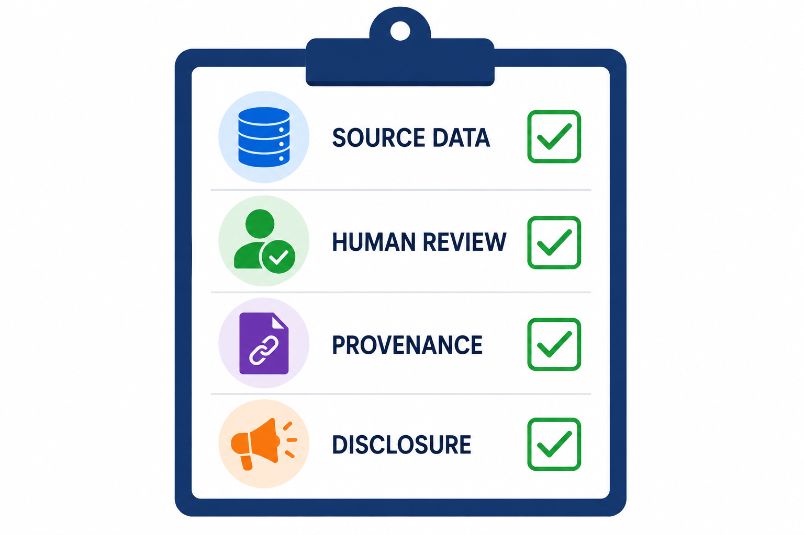

Responsible AI in Analysis
AI can make data analysis, visualization, and storytelling faster and more accessible, but speed is not the same as accuracy. An AI-generated analysis may contain incorrect calculations, unsupported conclusions, biased interpretations, fabricated details, or misleading explanations. Because of that, human oversight is essential. AI should be treated as an assistant, while the human analyst remains responsible for checking whether the data, methods, conclusions, visuals, and recommendations are accurate, relevant, ethical, transparent, and appropriate for the audience.
Independent verification and clear accountability are what make the final result trustworthy. A polished output can look convincing even when it is wrong, so the analyst must be ready to evaluate the work critically and defend it with evidence.
Comprehension Check 1 of 5
AI-Generated Visuals
AI-generated visuals can be useful when they help explain how something works, such as a process diagram, system architecture illustration, flow chart, or conceptual model. These are explanatory visuals, and viewers use them to learn a process or idea. Data-bearing visuals are different. Charts, graphs, maps, and dashboards communicate quantitative evidence, so they require a much higher level of verification.
AI does not truly understand whether every detail is true. It generates probable content by recognizing patterns from training data. That means the visual must be supported by reliable data or documentation and checked independently before it is used in a report, dashboard, or presentation.
Comprehension Check 2 of 5
Common AI Mistakes in Analysis and Visualization
AI-generated analysis and visuals should always be reviewed against the original data and the purpose of the analysis. A polished chart can still hide major problems, such as incorrect labels, the wrong columns, misread categories, or a calculation that was applied incorrectly. AI may also omit records, change units, select a misleading scale, invent a trend, or mislabel axes. In some cases it may even present correlation as causation or generate values that were never present in the source.
Other mistakes are more subtle. AI may use the wrong time period, handle missing values incorrectly, double-count duplicates, combine incompatible data sources, cherry-pick favorable results, choose an inappropriate chart type, overinterpret a small sample, or provide an explanation that is not actually supported by the evidence. The safest habit is to compare every AI-generated chart, calculation, and conclusion with the source data and documented definitions.
Comprehension Check 3 of 5
Ownership and Accessibility
AI-generated content also raises practical questions about recordkeeping and accessibility. The legal status of AI-generated work varies by jurisdiction, but it is always wise to keep records of the tools used, the human contribution, the source assets, the permissions involved, and the final editing decisions. That record makes it easier to explain how the result was produced and who is accountable for it.
Accessibility matters as well. AI-generated visuals can create barriers through low contrast, reliance on color alone, small or distorted text, decorative clutter, unclear visual hierarchy, or missing alternative text. A visual that looks polished but is difficult to read is not truly effective.
Transparency and Disclosure
Transparency helps viewers understand how the content was produced. It should reveal what system, what data, and what human review contributed to the final result. A simple label that says “AI-generated” is not enough, because it does not explain the source, the process, or the level of verification.
Better transparency includes source information, context, provenance records, human review, and clear disclosure of AI involvement so viewers can evaluate the content intelligently rather than blindly trusting or automatically rejecting it. The goal is informed evaluation.

Comprehension Check 4 of 5
Explainability
Explainability helps someone understand why the output was produced. It answers questions such as why a particular chart was selected, why certain variables were included, how values were calculated, why something was emphasized over another part of the data, and what assumptions affected the result.
Some AI-generated images may only need disclosure, but AI-generated dashboards, detailed charts, and recommendations that affect hiring, finance, or operations need much more explanation because people may make consequential decisions from them. The more important the decision, the more important it is to understand the logic behind the output.
Comprehension Check 5 of 5
Why This Matters
AI can be valuable in information systems, but only when it is used with care. The goal is not to reject AI, but to use it responsibly. That means verifying the results, documenting the process, explaining the output clearly, and keeping humans accountable for the final decision. When AI is transparent, explainable, and reviewed, it can strengthen analysis. When it is not, it can make a flawed result look more trustworthy than it really is.
Automation, Agents, and Data Workflows
Automation combines data, software, rules, APIs, and system integrations to perform repeated tasks. AI extends automation by helping systems interpret unstructured information, classify requests, summarize documents, generate responses, or make recommendations. An AI-enabled workflow may collect information, transform it, send it to another system, and notify a person when an action is needed. Agents are more flexible forms of automation that may plan or complete several steps toward a goal. Their usefulness depends on clearly defined permissions, reliable data, and appropriate limits.
Professionals should design automated workflows with testing, logging, exception handling, and human review. An AI agent should not have more access than necessary, and high-impact actions should require confirmation or escalation. A workflow should also have a clear stopping condition when the data is incomplete, the request is unusual, or the system is uncertain. The professional value lies in identifying which work should be automated, designing a reliable process, monitoring its performance, and ensuring that people remain able to understand and control the system.
Chapter Completion
Answer all five comprehension questions, then check your work.
Chapter complete
Copy or write down this access code. You will need it later in class to receive your points.
responsible-ai